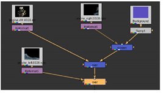

The Merge nodes create a composite with two or more images, using various compositing algorithms. In this example, we’ll do a very simple “A over B” composite to layer the foreground image over the background.
You can insert a compositing node from the Toolbar or menus, but we’ll show you a keyboard shortcut that bypasses both of these. The trick is the select both nodes you want to composite and then press a keyboard shortcut to assign a compositing node.
| 1. | Select the Reformat1 node, attached to engine.v01. This provides the foreground image for the first compositing operation. |
| 2. | Press the Shift key and select the Ramp1 node. Both “engine.v01” and “Ramp1” nodes should be selected. |
| 3. | Press the letter M to insert a Merge node. |
The first node you selected is attached to the A input on the Merge node, as the foreground input. The second node you selected is attached to B, the background input. If necessary, you can swap the A and B inputs of a merge node by pressing Shift+X.
In the Merge node control panel, the operation parameter determines the compositing algorithm used to generate the result of the two inputs - the selected operation becomes the name of the node in the Node Graph.
| 4. | Rearrange the nodes, so that the node tree looks similar to this: |

| 5. | For the next layer, select the Reformat3 node, attached to smoke_right. Then hold down the Shift key and select Ramp1. |
| 6. | Press M to insert a Merge node and composite one image over the other. This composites the “smoke_right” image over the background. |

| 7. | The default compositing algorithm, “Over,” isn’t what we need here. In the Merge2 control panel, click on the operation dropdown menu and select screen. |
| 8. | In the Merge2 properties panel, drag the mix slider and change its value to 0.30 to reduce the amount of the image supplied by the A input. |

| 9. | An additional Merge node is required. Select Reformat2 for smoke_left. Hold down the Shift key and select the Over node (the first Merge node you inserted). |

| 10. | Press M to composite the two nodes. In the Merge3 control panel, change the mix slider to 0.75. |
The result of your composite should look similar to the example below.

|
|